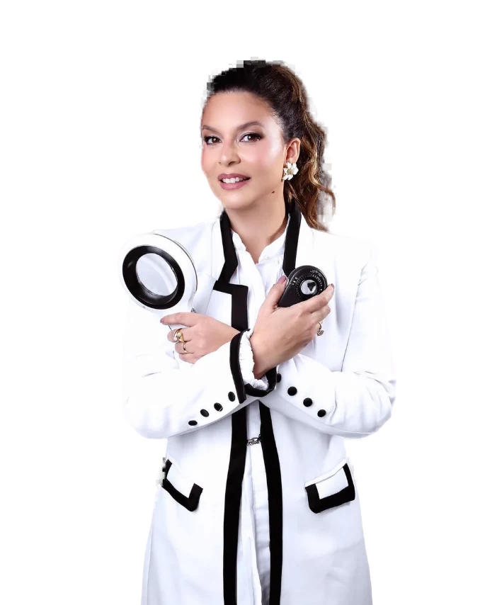

Melasma em Itabuna

Manchas no rosto
pedem avaliação
Com a Dra. Kelly Nassri, dermatologista (SBD) em Itabuna. CRM 18767 · RQE 11659.
Agendar avaliaçãoPágina de amostra. Texto aguardando revisão da Dra. Kelly.
O que é
O melasma é uma alteração na pigmentação da pele. Costuma aparecer como manchas acastanhadas no rosto, com mais frequência nas bochechas, na testa, no buço e no queixo.
Outras manchas podem ter aparência parecida. Por isso, o primeiro passo é confirmar o diagnóstico com um dermatologista.
Por que aparece
Não existe uma causa única. Exposição à luz solar, fatores hormonais, como gestação e uso de hormônios, e predisposição genética estão entre os fatores associados.
Como é a avaliação
Na consulta, a dermatologista examina a pele, pergunta sobre histórico e hábitos e avalia o que pode estar contribuindo para as manchas.
O plano é definido de forma individual. Ele pode incluir proteção solar, produtos de uso diário e, quando houver indicação, procedimentos.
Dúvidas
Sim. É uma condição crônica, que pode voltar. Por isso, o acompanhamento e a proteção solar fazem parte do cuidado.
O ideal é não usar sem orientação. Alguns produtos podem irritar a pele ou agravar as manchas.
Sim. Informe a gestação no agendamento e na consulta, porque isso influencia as opções de cuidado.

 Clínica Nassri
Clínica Nassri
Agende sua
avaliação
A sala de espera é esta, na sala 706. A mensagem sai pronta para a equipe da clínica, com o motivo da sua consulta.
- (73) 9900-8600
- @clinicanassri